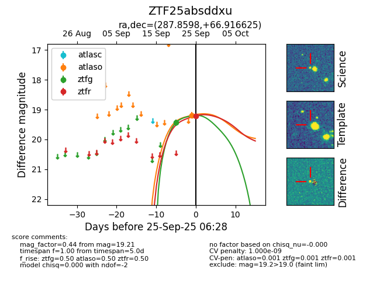
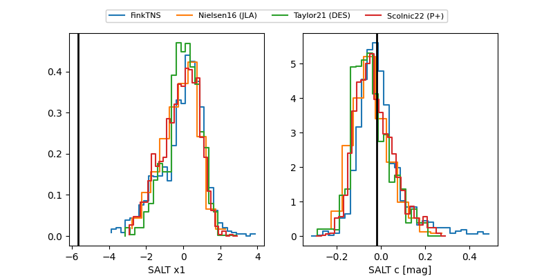

FINK: ZTF25absddxu
Lasair: ZTF25absddxu
ALeRCE: ZTF25absddxu
ZTF25absddxu (ztf,fink)
equatorial (ra, dec) = (287.8598,+66.91662)
galactic (l, b) = (97.8456,+22.89611)


last atlaso=19.19, ztfg=19.44, ztfr=19.21
1 atlaso, 1 ztfg, 1 ztfr detections